Creación de IA
Desarrollado por Alonso

Guía de inicio rápido del árbol de comportamiento
Esta guía muestra cómo utilizar árboles de comportamiento para configurar un personaje de IA que patrullará o perseguirá a un jugador.

En la Guía de inicio rápido del Árbol de comportamiento , aprenderás a crear una IA enemiga que reacciona al ver al jugador y comienza a perseguirlo. Al perder de vista al jugador, tras unos segundos (que puedes ajustar según tus preferencias), la IA dejará de perseguirlo y se moverá aleatoriamente por el entorno hasta volver a verlo, como se muestra en el siguiente video de ejemplo.
Aquí va el video final
Al final de esta guía, comprenderá los siguientes sistemas: Scripting visual de Blueprint Controladores de IA Pizarras Árboles de comportamiento Servicios de árboles de comportamiento Decoradores de árboles de comportamiento Tareas del árbol de comportamiento
1 - Configuración de proyecto requerida
En este primer paso, configuramos nuestro proyecto con los recursos que necesitaremos para que nuestro personaje de IA se desplace por el entorno.
Para esta guía, utilizamos un nuevo proyecto de plantilla en tercera persona de Blueprint.
1. Abra el Cajón de contenido , luego haga clic con el botón derecho en la carpeta ThirdPerson y cree una nueva carpeta llamada AI .

2. En la carpeta ThirdPerson > Blueprints , arrastre el archivo BP_ThirdPersonCharacter a la carpeta AI y seleccione Copiar aquí.
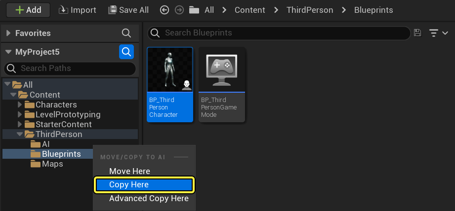
3. En la carpeta AI , crea una nueva clase Blueprint basada en la clase AIController.

4. Nombra el plano AIController como Enemy_Controller y el plano BP_ThirdPersonCharacter como Enemy_Character.
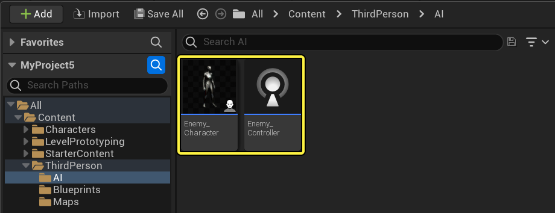
5. Abre Enemy_Character y luego elimina todo el script del gráfico.
6. Seleccione el componente Movimiento del personaje y luego establezca Velocidad máxima de caminar en el panel Detalles en 120.0.

Esto reduce la velocidad de movimiento de nuestro personaje controlado por IA en el entorno cuando patrulla y no persigue al jugador.
7. Seleccione Valores predeterminados de clase en la barra de herramientas y, a continuación, en el panel Detalles , asigne Enemy_Controller como la clase de controlador de IA .

Vamos a colocar nuestra IA en el mundo. Si generas la IA después de que el mundo se haya cargado, cambia la configuración de IA de posesión automática a Generada.
8. Desde el cajón de contenido , arrastre el Enemy_Character al nivel.
9. Desde el panel Actores de lugar , arrastre un NavMeshBoundsVolume al nivel.
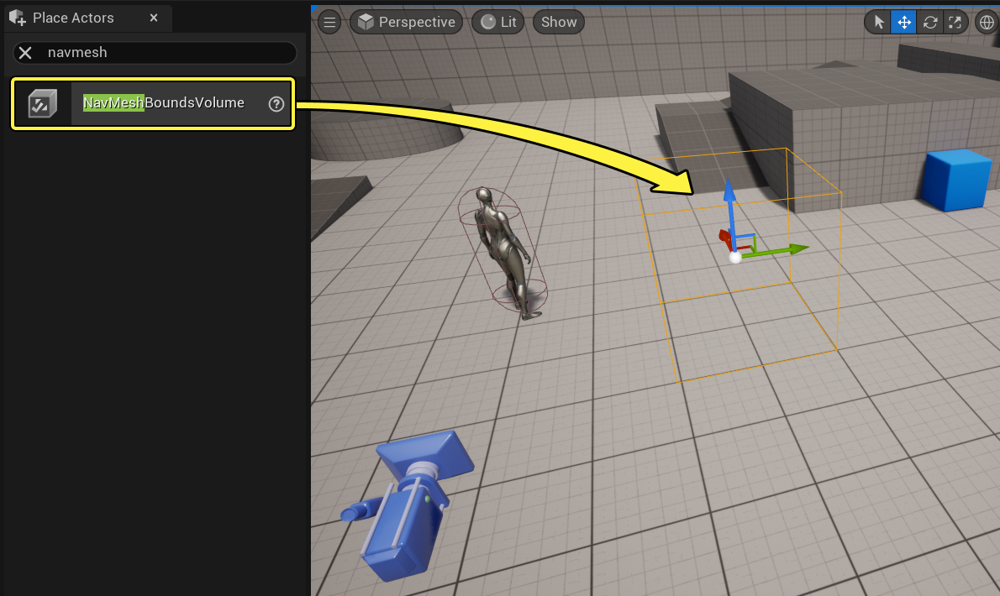
10. Con NavMeshBoundsVolume seleccionado, pulse R y ajuste el volumen para que abarque todo el nivel.
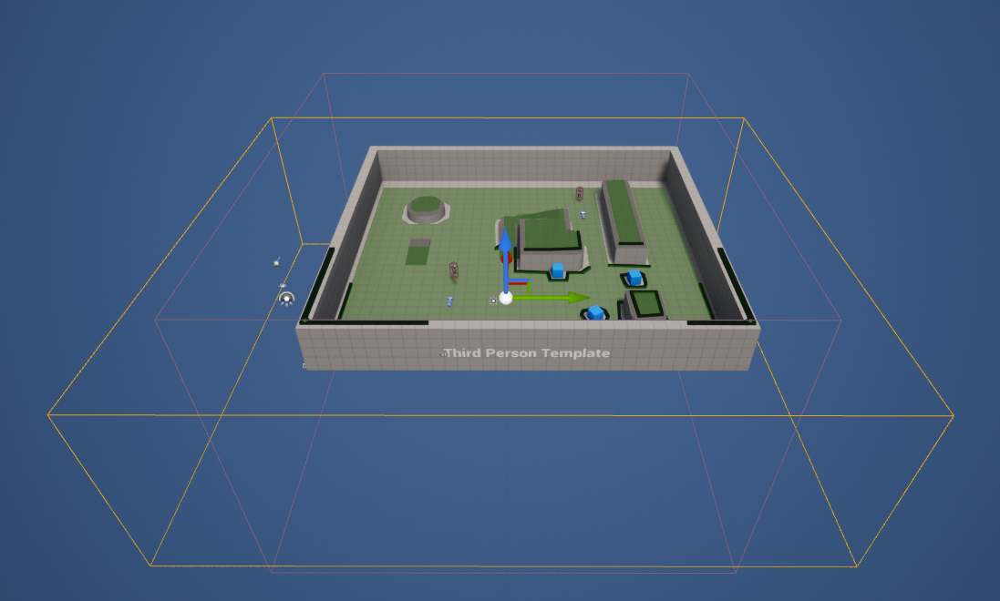
Esto generará una malla de navegación que permitirá a nuestro personaje de IA moverse por el entorno. Puedes pulsar la tecla P para mostrar u ocultar la malla de navegación en la ventana gráfica (las áreas verdes indican posibles ubicaciones de navegación).
Durante el juego, puedes usar el comando de consola Show Navigation para activar o desactivar la visualización de NavMesh.
La configuración de nuestro proyecto está completa; en el siguiente paso configuraremos nuestro recurso de Blackboard.
2 - Configuración de la pizarra
En este paso, creamos nuestro recurso de pizarra , que es esencialmente el cerebro de nuestra IA. Todo aquello que queremos que nuestra IA conozca tendrá una clave en la pizarra a la que podremos hacer referencia. Crearemos claves para controlar la posición del jugador, si la IA tiene o no línea de visión hacia él y una ubicación a la que la IA puede moverse cuando no lo persigue.
1. En el Cajón de contenido , haga clic en +Agregar y, en Inteligencia artificial , seleccione Blackboard y llámelo BB_Enemy.

2. Dentro del panel de control BB_Enemy , haga clic en el botón Nueva clave y seleccione Objeto.

El recurso Blackboard consta de dos paneles: Blackboard , que le permite agregar y realizar un seguimiento de sus claves de Blackboard (variables a supervisar), y Detalles de Blackboard , que le permite nombrar y especificar el tipo de claves.
3. Para la clave Objeto , introduzca EnemyActor como Nombre de entrada y Actor como Clase base.
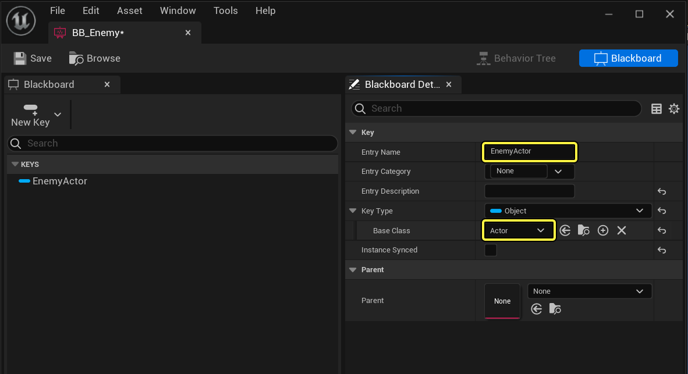
4. Agregue otra clave con el tipo de clave establecido en booleano llamada HasLineOfSight.

Esto se utilizará para controlar si la IA tiene o no línea de visión hacia el jugador.
5. Agregue otra clave , con el tipo de clave establecido en Vector llamada PatrolLocation.

Esto se utilizará para realizar un seguimiento de una ubicación en el nivel a la que la IA puede moverse cuando no esté persiguiendo al jugador.
Nuestro Blackboard está configurado con las cosas que necesitamos monitorear. En el siguiente paso, diseñaremos nuestro árbol de comportamiento.
3 - Diseño del árbol de comportamiento
En este paso, definiremos el flujo de nuestro árbol de comportamiento y los estados que queremos que nuestra IA alcance. Visualizar el árbol de comportamiento, mostrando los estados que prevemos que podría experimentar nuestra IA, nos dará una idea del tipo de lógica y reglas que necesitaremos crear para acceder a dichos estados.
1. En el cajón de contenido , haga clic en +Agregar y, en Inteligencia artificial , seleccione Árbol de comportamiento y llámelo BT_Enemy.

Las convenciones de nomenclatura pueden variar, pero generalmente es una buena práctica agregar un acrónimo del tipo de activo al nombre.
2. Abra BT_Enemy y asigne BB_Enemy como el recurso de Blackboard.

Si no ve las teclas de la pizarra que creamos, borre el recurso de la pizarra haciendo clic en la flecha amarilla y, a continuación, vuelva a asignar Enemy_BB para actualizar las teclas.
El árbol de comportamiento consta de tres paneles: el gráfico del árbol de comportamiento , donde se organizan visualmente las ramas y los nodos que definen los comportamientos; el panel de detalles , donde se pueden definir las propiedades de los nodos; y la pizarra , que muestra las teclas de la pizarra y sus valores actuales mientras el juego está en ejecución, y que resulta útil para la depuración.
3. En el gráfico, haga clic con el botón izquierdo y arrastre fuera de la raíz para agregar un nodo selector.

Los componentes compuestos son una forma de control de flujo y determinan cómo se ejecutan las ramas secundarias que están conectadas a ellos.
4. Para el nodo Selector , en el panel Detalles , cambie el Nombre del nodo a AI Root.
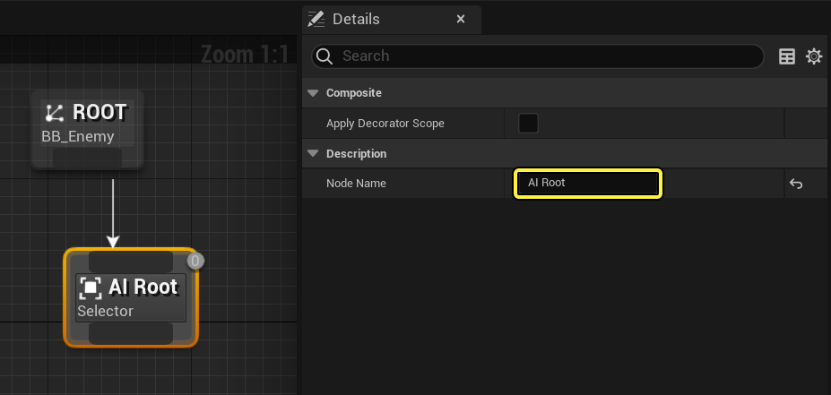
Cambiar el nombre de los nodos en el gráfico es una buena manera de identificar fácilmente, a grandes rasgos, la función de cada nodo. En este ejemplo, lo llamamos Raíz de IA, ya que es la verdadera "Raíz" de nuestro Árbol de Comportamiento, que alternará entre las ramas secundarias. El nodo Raíz predeterminado, que se agrega automáticamente al crear un Árbol de Comportamiento, se utiliza para configurar las propiedades del Árbol de Comportamiento y asignarle el recurso de Blackboard que utiliza.
5. Haz clic izquierdo y arrastra fuera de AI Root y agrega un nodo Sequence llamado Chase Player.

Aquí utilizamos un nodo de secuencia porque planeamos indicarle a la IA que realice una secuencia de acciones: girar hacia el jugador, cambiar su velocidad de movimiento y luego moverse hacia el jugador y perseguirlo.
6. Haz clic izquierdo y arrastra el nodo raíz de IA y agrega un nodo de secuencia llamado Patrulla.

Para nuestra IA, utilizaremos el nodo Secuencia para encontrar una ubicación aleatoria en el mapa, desplazarnos a esa ubicación y esperar allí un tiempo antes de repetir el proceso de búsqueda de una nueva ubicación a la que desplazarnos.
También podrá observar los números en la esquina superior derecha de los nodos:
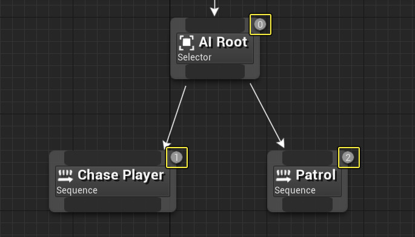
Esto indica el orden de operación. Los árboles de comportamiento se ejecutan de izquierda a derecha y de arriba abajo, por lo que la disposición de los nodos es importante. Las acciones más importantes para la IA generalmente deben colocarse a la izquierda, mientras que las menos importantes (o comportamientos de reserva) se colocan a la derecha. Las ramas secundarias se ejecutan de la misma manera y, si alguna rama secundaria falla, toda la rama dejará de ejecutarse y retrocederá en el árbol. Por ejemplo, si la acción Perseguir al jugador falla, regresaría a la raíz de la IA antes de pasar a Patrullar.
7. Arrastre AI Root y luego agregue una tarea de espera a la derecha de Patrol con un tiempo de espera establecido en 1.0.

Observarás que este nodo es morado, lo que indica que es un nodo de tarea . Los nodos de tarea representan las acciones que deseas que realice el árbol de comportamiento . La tarea de espera actúa como comodín si el árbol de comportamiento falla tanto en la tarea de perseguir al jugador como en la de patrullar.
8. Arrastra el reproductor Chase y añade un nodo Rotate to Face BBEntry.

Esta tarea en particular te permite designar una entrada del tablero que deseas rotar y orientar, en nuestro caso, el Actor enemigo (Jugador). Una vez que agregas el nodo, si miras el panel Detalles , la Clave del tablero se establecerá automáticamente en EnemyActor porque filtra la variable Actor del tablero y es la primera en la lista. Puedes ajustar la opción Precisión si deseas ajustar el rango de la condición de éxito, así como cambiar el Nombre del nodo.
9. En la barra de herramientas , haga clic en el botón Nueva tarea.
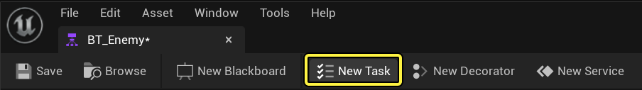
Además de usar las tareas predefinidas, puedes crear y asignar tareas personalizadas con lógica adicional que puedes personalizar y definir. Esta tarea se usará para cambiar la velocidad de movimiento de la IA para que persiga al jugador. Al crear una nueva tarea, se creará y abrirá automáticamente un nuevo plano.
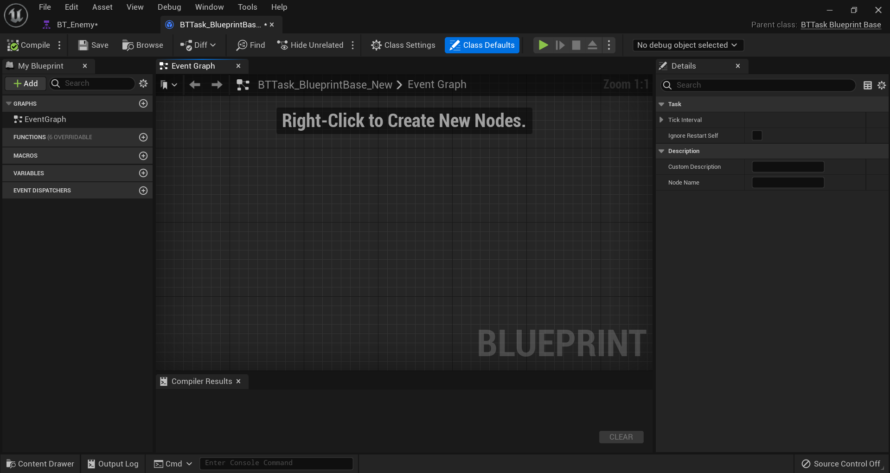
10. En el Cajón de contenido , cambie el nombre del nuevo recurso a BTT_ChasePlayer.

Es recomendable renombrar inmediatamente las tareas , decoradores o servicios recién creados. La convención de nomenclatura adecuada consiste en anteponer al nombre del recurso el tipo de recurso que se crea, como BTT para tareas de árbol de comportamiento, BTD para decoradores de árbol de comportamiento o BTS para servicios de árbol de comportamiento.
11. Dentro de BT_Enemy , agregue la tarea BTT_ChasePlayer seguida de un Move To.

Nuestra nueva tarea aún no tiene lógica, pero volveremos y agregaremos la lógica para cambiar la velocidad de movimiento de nuestro personaje de IA después de lo cual, la IA se moverá hacia el EnemyActor (Jugador).
12. Crea una nueva tarea y cámbiale el nombre a BTT_FindRandomPatrol , luego conéctala a Patrol.

13. Agregue una tarea "Mover a " y establezca la clave de Blackboard en PatrolLocation.
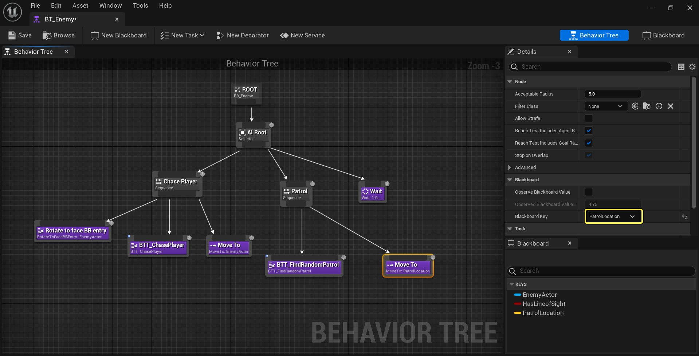
Esto le indicará a la IA que se mueva a la ubicación de patrulla que se establecerá dentro de la tarea BTT_FindRandomPatrol.
14. Agregue una tarea de espera después de Mover a con un tiempo de espera de 4.0 y una desviación aleatoria de 1.0.

Esto le indica a la IA que espere en PatrolLocation durante 3-5 segundos (una desviación aleatoria añade o resta un segundo al tiempo de espera).
La estructura de nuestro árbol de comportamiento está completa. En el siguiente paso, añadiremos la lógica para modificar la velocidad de movimiento de la IA, encontrar una ubicación aleatoria a la que dirigirse cuando la IA esté patrullando y la lógica para determinar cuándo la IA debe perseguir al jugador o patrullar.
4 - Configuración de tareas - Chase Player
En este paso, configuramos nuestra tarea de persecución del jugador para cambiar la velocidad de movimiento al perseguir al jugador.
1. Dentro de BTT_ChasePlayer , haga clic con el botón derecho y agregue un nodo Event Receive Execute AI.

El nodo Event Receive Execute AI se activa cuando esta tarea se activa dentro del árbol de comportamiento.
Siempre debes seleccionar la versión de IA de Event Receive Execute , Event Receive Abort y Event Receive Tick si el Agente es un Controlador de IA. Si se implementan versiones genéricas y de IA para los eventos, solo se invocará la más adecuada; es decir, se invocará la versión de IA para la IA y la genérica en caso contrario.
2. Fuera del pin Controlled Pawn , usa un nodo Cast to Enemy_Character.

Aquí, accedemos al plano del personaje para nuestra IA llamada Enemy_Character mediante el uso de un nodo Cast.
3. Dentro del Content Drawer , abre el Blueprint Enemy_Character y agrega una función llamada Update Walk Speed.

Esta función será llamada desde nuestro árbol de comportamiento y se utilizará para cambiar la velocidad de movimiento de la IA.
Técnicamente, podríamos acceder al componente de movimiento del personaje desde el nodo Cast en nuestra tarea Chase Player y ajustar la velocidad de movimiento desde dentro de la tarea; sin embargo, no se recomienda que el árbol de comportamiento modifique directamente las propiedades de los subobjetos. En su lugar, haremos que el árbol de comportamiento llame a una función dentro del personaje, la cual realizará las modificaciones necesarias.
4. En el panel Detalles de la función Actualizar velocidad de marcha , agregue una entrada de tipo Flotante llamada NewWalkSpeed.
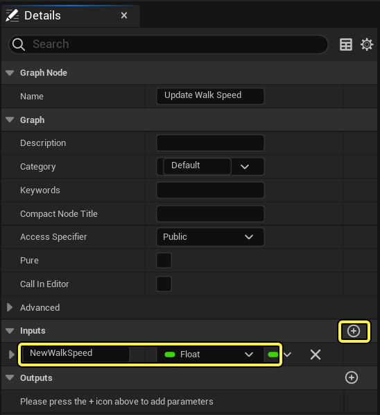
5. Arrastra el componente CharacterMovement fuera de la pestaña Componentes.
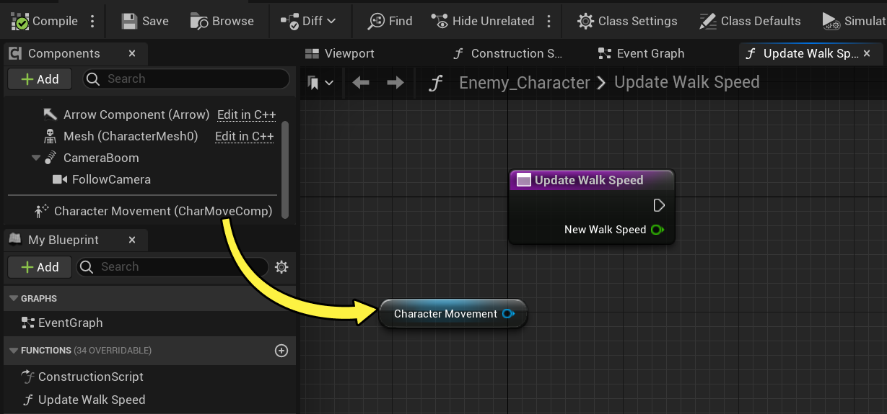
6. Haz clic y arrastra fuera del pin de Movimiento del personaje y en el menú de acciones escribe Establecer velocidad máxima de caminar , luego haz clic en Establecer velocidad máxima de caminar en el menú.
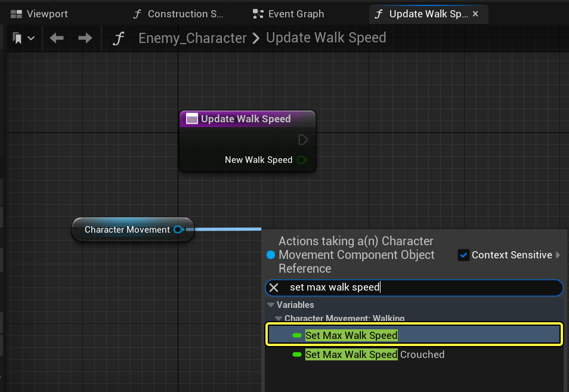
7. Utilice la opción "Establecer velocidad máxima de marcha" y conéctese como se muestra a continuación.

Cuando llamamos a esta función desde el árbol de comportamiento, podemos pasarle un valor que se utilizará como nueva velocidad.
1. De vuelta dentro de la tarea BTT_ChasePlayer , desde el nodo As Enemy Character , llame a Update Walk Speed establecido en 500.0 y conéctese como se muestra.
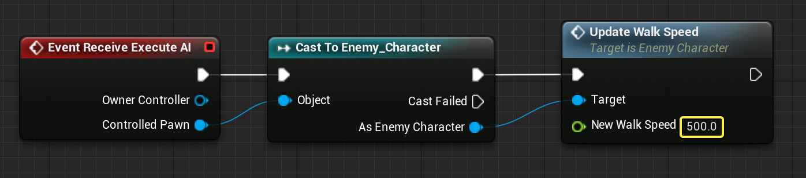
¿No ves la función Actualizar velocidad de caminar que creaste? Es posible que necesites compilar el Blueprint Enemy_Character antes de intentar agregarlo a la tarea Perseguir jugador.
2. Después de actualizar la velocidad de caminata , agregue dos nodos Finish Execute y conéctelos como se muestra a continuación.

Aquí marcamos la tarea como finalizada con éxito cuando logramos convertirla al personaje enemigo. Si el peón controlado no es un personaje enemigo, debemos gestionar este caso, por lo que marcamos la tarea como fallida, lo que la abortará.
3. Haz clic con el botón derecho en el pin de Nueva velocidad de caminata , luego conviértelo en una variable y llámala ChaseSpeed.

4. Para ChaseSpeed , asegúrese de habilitar la opción Editable de instancia.

Al convertir esto en una variable editable de instancia , el valor de Velocidad máxima de caminar se puede establecer desde fuera de este Blueprint y estará disponible como una propiedad dentro de nuestro Árbol de comportamiento.

Ahora podemos cambiar fácilmente el valor de Velocidad de persecución que se envía al Blueprint Enemy_Character, lo que nos permite ajustar y modificar la velocidad a la que nuestra IA persigue al jugador.
Nuestra tarea de persecución del jugador está completa. En el siguiente paso, configuraremos la lógica de la tarea de búsqueda de patrulla aleatoria para obtener una ubicación aleatoria a la que la IA deba desplazarse.
5 - Configuración de la tarea - Encontrar patrulla aleatoria
En este paso, configuramos nuestra tarea de Patrulla Aleatoria para que nuestra IA se mueva a una ubicación aleatoria cuando no esté persiguiendo al Jugador.
Implementar una tarea de árbol de comportamiento de Blueprint es una forma inteligente de iterar rápidamente, pero, si el rendimiento es una preocupación, puede que decida pasar a una tarea de árbol de comportamiento nativa.
1. Dentro de BTT_FindRandomPatrol , usa Event Receive Execute AI y Cast to Enemy_Character y conéctalos.

2. Desactivado como personaje enemigo , llama a Actualizar velocidad de caminar y promueve Nueva velocidad de caminar a una variable llamada Velocidad de patrulla con la siguiente configuración:
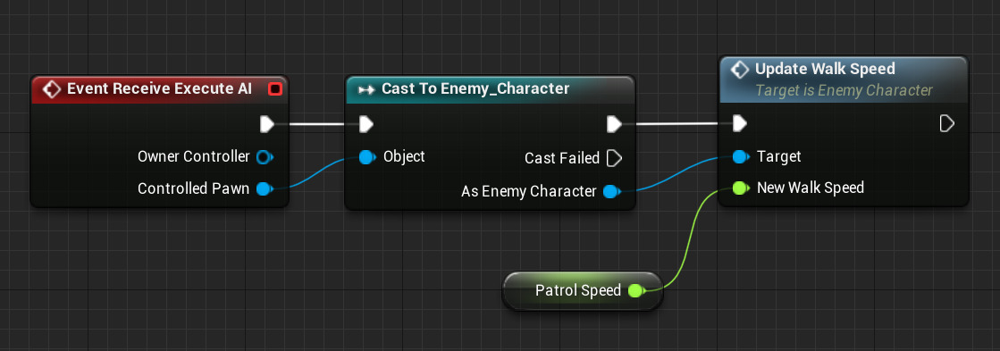
- Nombre de la variable : PatrolSpeed - Instancia editable : Habilitada - Velocidad de patrulla (valor predeterminado) : 125.0
Aquí estamos reduciendo la velocidad de movimiento del enemigo mientras patrulla.
3. Off Controlled Pawn , Obtener ubicación del actor y luego ObtenerRandomReachablePointInRadius con el valor de retorno conectado a una rama.
4. Ascienda el valor de Radius en GetRandomReachablePointInRadius a una variable con la siguiente configuración:

Nombre de la variable : PatrolRadius - Instancia editable : Habilitada - Radio de patrulla (valor predeterminado) : 1000.0
Aquí buscamos una ubicación aleatoria dentro de un radio de 1000 unidades de la ubicación actual del personaje enemigo. También utilizamos un nodo de bifurcación para manejar el caso excepcional en el que no se encuentre un punto aleatorio al que moverse.
5. Fuera del marcador de ubicación aleatoria , use Establecer valor de pizarra como vector con la clave promovida a una variable llamada PatrolLocation.
6. Utilice otro nodo Establecer valor de pizarra como vector con el valor proveniente de Obtener ubicación del actor.
7. Continuando desde el paso anterior, conecte como se muestra a continuación con ambos nodos, lo que dará como resultado Finish Execute marcado como Success.
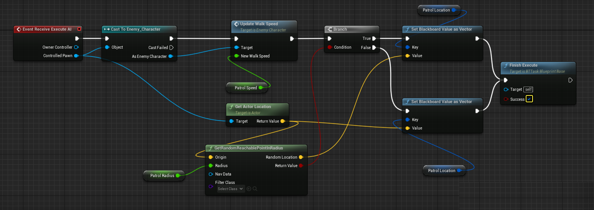
Si el enemigo encuentra una posición aleatoria a la que moverse, esta se almacenará en el tablero como la ubicación de destino. Si no encuentra ninguna ubicación, utilizará su posición actual y permanecerá allí antes de intentar una nueva. Aún debemos gestionar el caso excepcional en el que el peón controlado no sea Enemy_Character.
8. Fuera del pin Cast Failed del nodo Cast , utilice Finish Execute con Success deshabilitado.
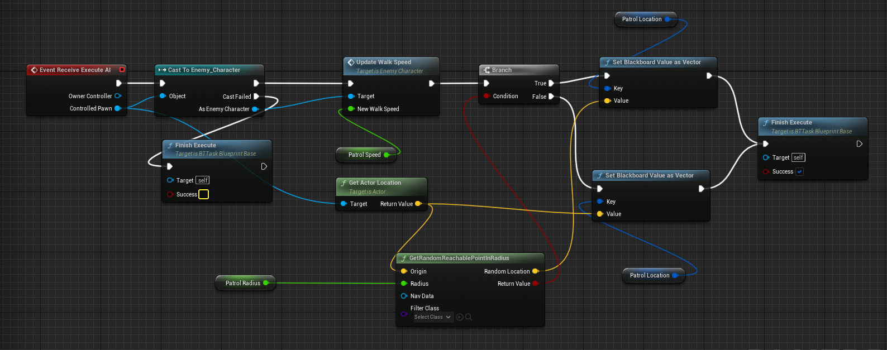
Si el peón controlado no es Enemy_Character, esta tarea se marcará como fallida y se abortará.
Nuestra tarea de búsqueda de patrullas aleatorias ha finalizado. En el siguiente paso, aprenderemos más sobre los decoradores y cómo se pueden usar como condiciones, además de configurar nuestro controlador de IA.
6 - Configuración del controlador de IA
En este paso, realizamos un pequeño trabajo dentro del controlador de IA como preparación para el paso final, configurando un decorador para determinar a qué rama de nuestro árbol de comportamiento debemos acceder.
1. En el cajón de contenido , abre el plano Enemy_Controller y añade un nodo Event On Possess.
2. Evento Off On Possess , agregue un nodo Run Behavior Tree con BTAsset establecido en BT_Enemy.
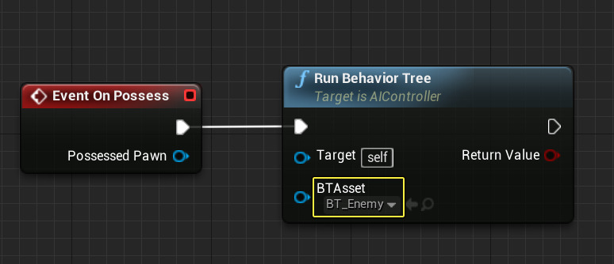
La función Run Behavior Tree es una llamada funcional contextual que se dirige a los planos de clase del controlador de IA y le permite ejecutar el recurso Behavior Tree asignado.
3. En la ventana Componentes , haga clic en + Agregar y busque y agregue un componente AIPerception.
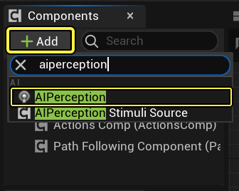
El componente de percepción de IA se utiliza para crear un receptor de estímulos dentro del sistema de percepción de IA y recopila los estímulos registrados (en nuestro caso, podemos usar la vista) a los que el jugador puede responder. Esto nos permitirá determinar cuándo la IA ve al jugador y reaccionar en consecuencia.
4. En el panel Detalles del componente AIPerception , agregue una configuración de AI Sight y habilite Detect Neutrals.
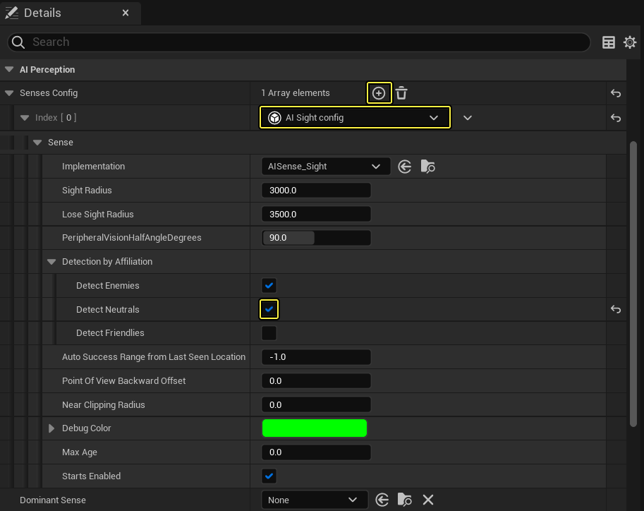
Las propiedades de Detección por Afiliación permiten configurar una IA basada en equipos que lucha junto a compañeros de la misma afiliación y ataca a miembros de la afiliación contraria. Por defecto, a los actores no se les asigna ninguna afiliación y se consideran neutrales.
Actualmente, no es posible asignar la afiliación mediante Blueprint, por lo que activaremos la opción "Detectar neutral" para identificar al jugador. Como alternativa, utilizaremos el etiquetado de actores para determinar qué personaje es el jugador y obligaremos a los personajes controlados por la IA a perseguir únicamente a los actores etiquetados como jugadores.
5. En la sección Eventos de AIPerception , haga clic en el signo + junto a Percepción en el objetivo actualizada.
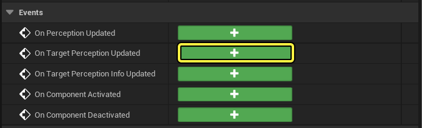
6. Apagado En Objetivo Percepción Actualizada en el gráfico, agregue un nodo Actor Tiene Etiqueta con Etiqueta establecida en Jugador.
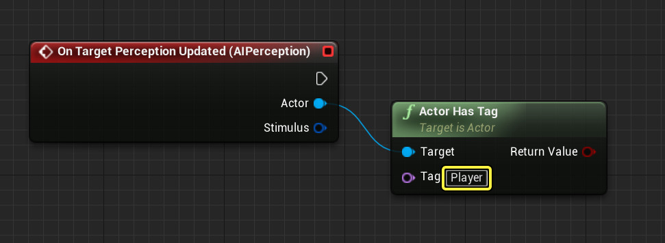
7. A partir del pin Stimulus , agregue un nodo Break AIStimulus.
8. Agregue un nodo de rama con la condición que se muestra a continuación.
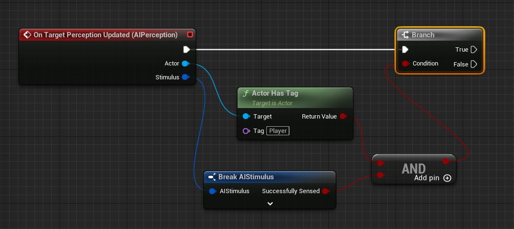
Aquí estamos comprobando si el Actor fue detectado correctamente y si ese Actor tiene la Etiqueta del Jugador.
Puedes seleccionar el nodo Break AIStimulus y, en el panel Detalles , usar la opción Ocultar pines no conectados para ocultar todos los pines que no estén conectados, de modo que tu gráfico se vea similar al de arriba.
9. Fuera del valor Falso de la Rama , use Establecer temporizador por evento con Tiempo establecido en 4.0.
10. Haz clic con el botón derecho y convierte Tiempo en una variable y llámala Temporizador de línea de visión.
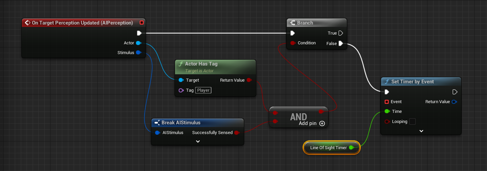
Esta variable y el valor asignado determinarán cuánto tiempo transcurrirá antes de que la IA deje de perseguir al jugador, momento en el cual se ejecutará el evento adjunto.
11. Haz clic con el botón derecho en el valor de retorno de Establecer temporizador por evento y conviértelo en una variable llamada EnemyTimer.
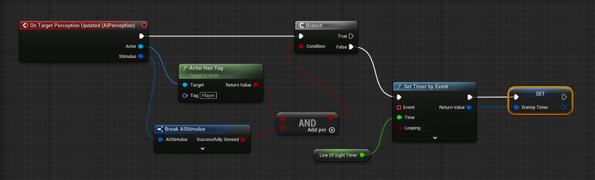
Esto almacena una referencia al temporizador mediante un identificador . Este identificador puede ser llamado a través de un script para invalidarse y borrar cualquier evento asociado (impidiendo que se ejecute). Podemos usarlo más adelante si la IA vuelve a ver al jugador antes de que se agote el temporizador de línea de visión, lo que evita que la IA pierda de vista al jugador y abandone la persecución.
12. Crea un evento personalizado y llámalo StartEnemyTimer y conéctalo al pin de evento de Establecer temporizador por evento.
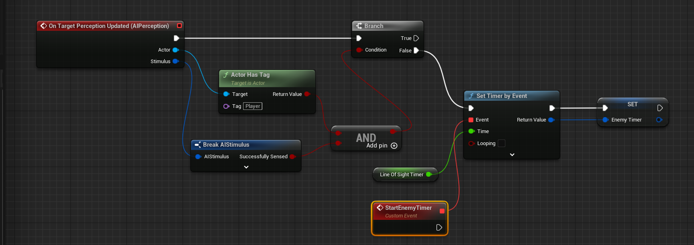
13. Haz clic con el botón derecho y, a continuación, en Variables > IA , añade un nodo Obtener pizarra.
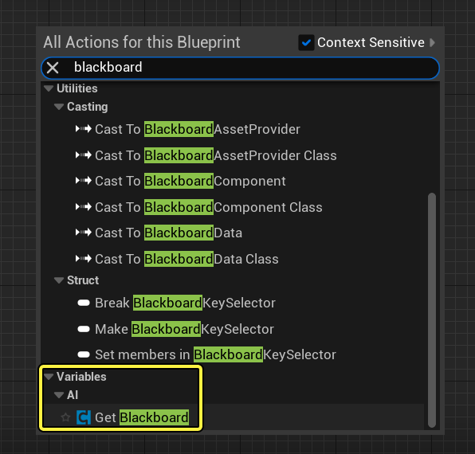
14. Fuera de Blackboard , use Establecer valor como booleano y Establecer valor como objeto y conéctelos como se muestra a continuación.
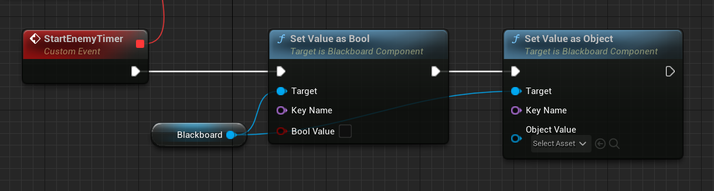
Esto nos permite actualizar las claves de la pizarra definidas con nuevos valores.
15. Haz clic con el botón derecho y convierte ambos nombres de clave en variables llamadas HasLineOfSight y EnemyActor , respectivamente.
16. Compila el plano y establece los valores predeterminados para ambos nombres de clave en HasLineOfSight y EnemyActor respectivamente.
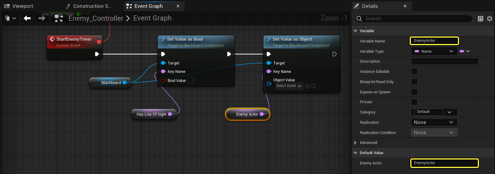
17. Fuera del verdadero de la rama , use Get EnemyTimer y luego Clear and Invalidate Timer by Handle.
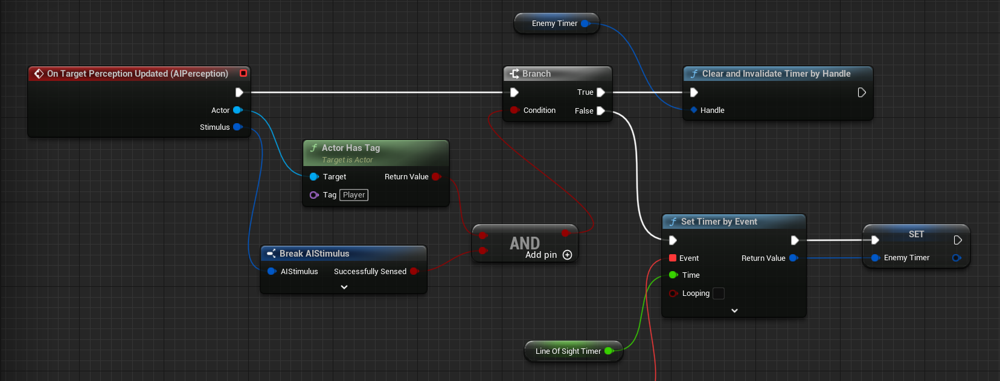
Cuando la IA vea al jugador, reiniciará el temporizador de línea de visión hasta que vuelva a perderlo de vista (momento en el que comenzará un nuevo temporizador de línea de visión).
18. Copie y pegue los nodos Blackboard , Set Value as y Key Name como se muestra.
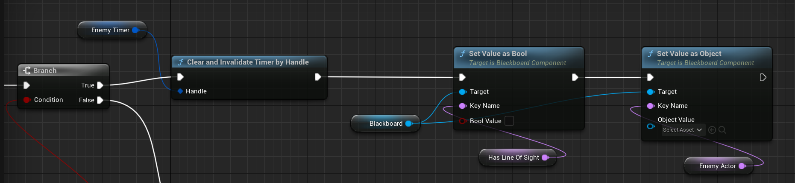
19. En el nodo Establecer valor como booleano , habilite el valor booleano y arrastre el pin Actor al valor del objeto como se muestra.
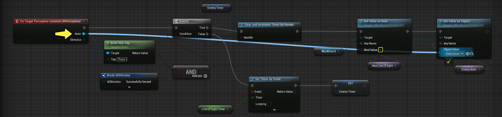
Esto establece los valores clave de Blackboard para Has Line Of Sight en True y EnemyActor en el Actor que percibimos (que hemos configurado para que solo se active si es el Jugador).
20. Haz clic en Compilar para compilar y luego cierra el plano.
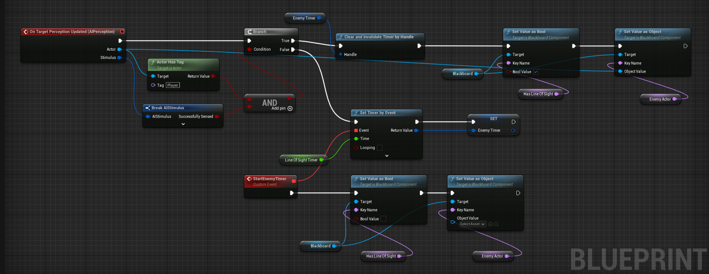
El gráfico final debería ser similar al anterior.
7 - Decoración y montaje final
En esta sección final, ajustamos algunas configuraciones en los planos del personaje del jugador y del personaje enemigo. También configuramos nuestro decorador en el árbol de comportamiento , que determinará a qué rama podemos acceder según una condición específica.
1. Dentro del panel de contenido, en Contenido > ThirdPersonBP > Blueprints , abra el Blueprint ThirdPersonCharacter.
2. En el panel Detalles , busque y agregue un conjunto de etiquetas para el Jugador . ![ En el panel Detalles, busque y agregue una etiqueta con el valor Playerbtqs-step-6-18.png Al añadir esta etiqueta de jugador, la IA ahora puede percibir al jugador y reaccionar ante él.
3. Abre el archivo Enemy_Character Blueprint que se encuentra dentro de tu carpeta AI.
4. En el panel Detalles , busque Rotación y habilite Usar guiñada de rotación del controlador.
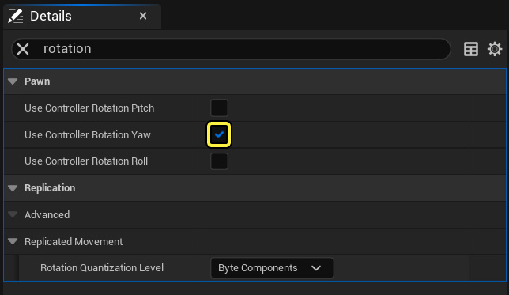
Esto hará que la IA gire correctamente cuando se llame a la entrada Rotate to Face BB desde nuestro árbol de comportamiento.
¿No ves las opciones de Pawn? Es posible que primero tengas que hacer clic en el botón Class Defaults de la barra de herramientas.
5. Abre BT_Enemy y haz clic con el botón derecho en Chase Player , luego en Agregar decorador... , selecciona Blackboard.
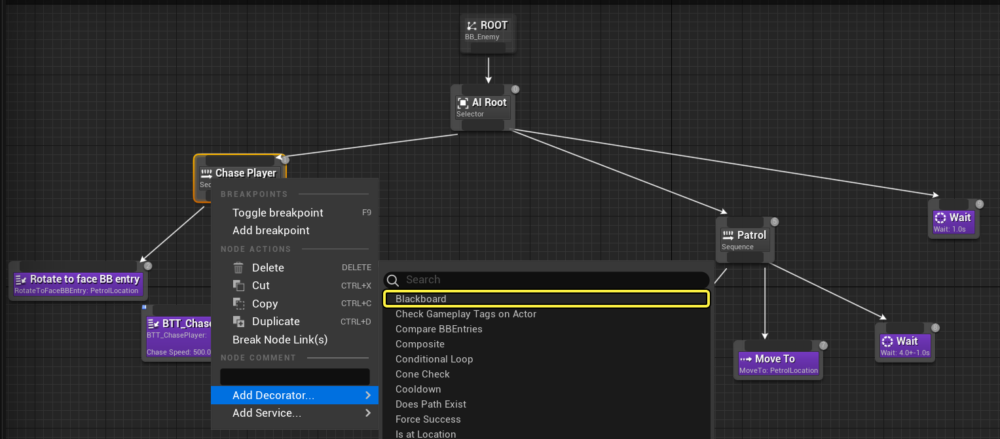
Al hacer clic con el botón derecho en un nodo de un árbol de comportamiento , puede agregar subnodos que proporcionan funcionalidad adicional
Vamos a utilizar el decorador Blackboard para determinar el valor de una clave Blackboard , que, cuando sea válida, permitirá que se ejecute esta rama.
6. Seleccione la condición basada en pizarra que se agregó y configure los siguientes ajustes en el panel Detalles.
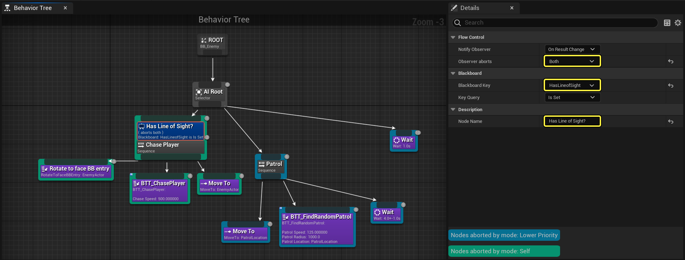
Haz clic en la imagen para verla completa. El observador aborta a ambos Clave de pizarra para HasLineOfSIight ¿Nombre del nodo que tiene línea de visión?
Aquí indicamos que cuando el valor de HasLineOfSight esté establecido (o sea verdadero), se ejecutará esta rama de Chase Player . El observador aborta la configuración de Both indica que cuando la clave de pizarra que asignamos cambia, aborta nuestro propio ( Chase Player ) y cualquier tarea de menor prioridad. Esto significa que cuando el valor de HasLineOfSight cambie y no esté establecido, abortaremos nuestro propio ( Chase Player ), momento en el que se ejecutará la siguiente rama ( Patrol ). Cuando el valor de HasLineOfSight pase a estar establecido , el observador también abortará las tareas de menor prioridad, lo que permitirá que se ejecute la rama de Chase Player.
7. Compila y cierra el árbol de comportamiento y luego reproduce en el editor.
Resultado final
Ahora debería poder probar su IA y le seguirá cuando le vea.
Nota: Aquí va el video fianl
Cuando la IA te pierda de vista, seguirá intentando localizarte y recuperar el contacto visual. Una vez transcurrido el tiempo especificado en el temporizador de línea de visión , dejará de perseguirte y volverá a patrullar.
Puedes observar el Árbol de Comportamiento en acción mientras juegas para ver cómo cambia entre las diferentes ramas. También puedes ver las variables dentro del Árbol de Comportamiento mientras juegas para hacerte una idea de los valores actuales de la IA.
8 - ¡Por tu cuenta!
Ahora que tu personaje controlado por IA perseguirá al jugador y volverá a patrullar después de perderlo de vista durante un tiempo determinado, ¡intenta añadir algunos de los siguientes elementos a tu árbol de comportamiento por tu cuenta!
En el árbol de comportamiento , para ambas tareas de "Mover a ", agregue un nuevo servicio que incorpore la funcionalidad de la tarea que lo precede.
Nuestro árbol de comportamiento original utiliza una tarea separada para ajustar la velocidad de movimiento (en el caso de perseguir al jugador) y encontrar una ubicación aleatoria para patrullar y disminuir la velocidad de movimiento (en el caso de patrullar). Convierta estos en servicios que estén asociados a la tarea Mover a.
Sugerencia: El script en los Servicios será similar al script en cada Tarea ; sin embargo, en lugar de Event Receive Execute AI , deberá usar Event Receive Activation AI . Dado que son un Servicio , tampoco necesitará un nodo Finish Execute.
En lugar de utilizar un punto de patrulla aleatorio al que desplazarse, cree un plano de ruta de patrulla que contenga una variable de matriz de valores vectoriales entre los que la IA pueda moverse.
Sugerencia: Recorre la matriz y obtén la siguiente entrada para mover la IA entre las ubicaciones, luego actualiza el valor de la clave del tablero, PatrolLocation, según la entrada actual en tu matriz.
Cuando se pierda la línea de visión con el jugador, la IA debe moverse a la última ubicación conocida del jugador en lugar de obtener la ubicación actual del jugador.
Consejo: En el comando Move To para girar y perseguir al jugador , deberá especificar una ubicación en lugar de EnemyActor , ya que actualmente está configurado para obtener la ubicación de EnemyActor (que recupera la ubicación actual del jugador).
Añade funcionalidad de ataque a la IA una vez que alcancen al jugador.
Sugerencia: Añade un nuevo nodo compuesto como tarea de fondo para girar y perseguir al jugador . Una vez que la IA alcance al jugador, añade un nodo de tarea para una animación de ataque.